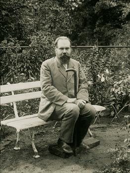
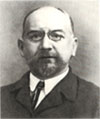

«Без развития научно-исторический и теоретической музыкальной мысли даже сильно развитое искусство не
способно проникнуть в общественную толщу и остаётся использованным только самым тонким слоем общества»
писал В.А. Булычев о предпосылках возникновения Музыкально-теоретической библиотеки.
Музыкально-теоретическая библиотека была открыта в Москве в 1909 г. Помещение ей было предоставлено в
здании Московской консерватории.
«Без развития научно-исторический и теоретической музыкальной мысли даже сильно развитое искусство не
способно проникнуть в общественную толщу и остаётся использованным только самым тонким слоем общества»
писал В.А. Булычев о предпосылках возникновения Музыкально-теоретической библиотеки.
Музыкально-теоретическая библиотека была открыта в Москве в 1909 г. Помещение ей было предоставлено в
здании Московской консерватории.
29 января 1910 г. Ядром фонда библиотеки стал дар С.И. Танееваоколо 100 книг и рукописей. Пожертвовал Танеев и два каталожных шкафчика американской системы. Фонд библиотеки складывался из пожертвований и весьма ценныхи серьезных покупок. Среди них часть уникальной личной библиотеки русского музыкального критика Г.А. Ларошавсего 450 названий книг по музыке и музыкальных журналов. В их числе ряд библиографических редкостей, например: Cacilia. Н. 1-12 (Meinz, 1824; 1825); Walther J. С. Musikalisches Lexikon (Leipzig, 1732); Seheibe J.A. Ueber die musikalische Composition. Т. 1: Die Theorie der Melodie und Harmonje (Leipzig, 1773); Guтpelzheiтer А. Compendium musicae latino-germanicum (Erfurt, 1655).
Оценивая пути пополнения фондов научно-теоретической библиотеки, следует самым позитивным образом оценить отбор источников поступлений литературы, то есть отбор издательств. В первые же годы становления библиотеки от Попечительного совета о русских композиторах в неё поступило всё выпушенное издательством М.П. Беляевавсего 737 экз. на сумму 1 200 руб.; 424 нотных издания от издательства Циммермана (эта коллекция была ценна своей педагогической направленностью; и сегодня это направление приоритетное у издательства «Циммерман»). Среди поступлений в библиотеку пожертвования от Российского музыкального издательства и грандиозный дар издательства П.И. Юргенсонапочти все издания, 4600 экз. нот И несколько книг.
К ЗО-летней годовщине со дня смерти Н.Г. Рубинштейна при библиотеке была открыта читальня, названная его именем. С.И. Танеев пожертвовал в пользу читальни всю сумму, собранную членами общества «Музыкально-теоретическая библиотека» для покупки ему, Сергею Ивановичу, рояля.
Поначалу читальня обслуживала членов Музыкально-теоретической библиотеки, учащихся и педагогов консерватории. С 1 января 1912 г. она была открыта для всех желающихс правом бесплатного пользования нотами и книгами.
Самыми значительными за всю историю существования библиотеки были такие проявления благотворительности, как пожертвование коммерсанта В. В. Варгина (1 О 15 руб., «причём одну тысячу от семьи Варгиных, а 15 руб. от их старой няни»37) И субсидия со стороны её высочества принцессы Елены Георгиевны Саксен-Альтенбургской на предмет уплаты долга Брейткопфу (в размере 4 000 руб.).
С самого начала библиотека строила свою работу в соответствии с регламентациями, созданными чрезвычайно образованными (в том числе в области юриспруденции) подвижниками музыкально-теоретического просвещения В.А. Булычевым и М.В. Ивановым-Борецким. В практической деятельности библиотеки принимали участие не случайные, а такие вполне подготовленные люди, как члены общества «Музыкально-теоретическая библиотека» С.Г. Кондра и З.Ф. Савёлова. Благодаря этому в библиотеке сразу был заведён учёт, в соответствии с международными правилами создавались нотный и книжный алфавитный, а также систематический каталоги; в основу последнего была положена универсальная десятичная классификация (УДК).
Во время Первой мировой войны в помещении библиотеки был развёрнут госпиталь (1915). Издания были сначала складированы, а затем размещены в здании Румянцевского музея (нынеРГБ), где и находились до 1919 г.

Воистину бесценным оказалось получение большей части личной библиотеки С.И. Танеева в количестве 3 882 экз. Вот перечень некоторых изданий, сохранивших для нас следы работы с ними (пометки) С.И. Танеева: Aпdre А. Lehrbuch der Tonsetzkunst ... (Offenbach: а м. Andre, 1838).; BachJahrbuch, 1904 (Leipzig: Breitkopf & Hartel); Bussler L. Musikalische Formenlehre in 33 Aufgaben (Berlin: С. Habel, 1878); Haber! J. Beitrage zur Lehre уоп der musikаlisсhеп Komposition. Die Lehre уоп dem einfachen Kontrapunkt (Leipzig: Breitkopf & Hartel, 1899); Ирмологий нотного пения (1862); Вагнер Р. Опера и драма / Пер. А. Шепелевского и А. Винтера (м.: Юргенсон, 1906); Геварт А. Ф. Руководство к инструментовке / Пер. П.И. Чайковского.
В этом же году библиотека была национализирована, и библиотечный подотдел Музыкального отдела Наркомпроса вернул её в здание консерватории. К этому моменту библиотека насчитывала 16 670 экз. нот и книг.
В 1921 г. библиотека, получившая название Музыкально-академической, была передана в ведение Государственного института музыкальной науки (ГИМН), а в 1923 г.Российской академии художественных наук (РАХН).
В ведении последней она находилась недолго, а именно до 1924 г., когда перешла к консерватории и стала составной частью её библиотеки вместе с фондами и штатом, оставаясь в своём старом консерваторском помещении.
Это произошло благодаря твёрдой позиции, которую занял в этот период М.В. Иванов-Борецкий. «Михаил Владимирович имел особые причины любить консерваторскую библиотеку, чувствуя себя связанным с ней кровными, "интимными" узами: приблизительно каждая вторая книга была здесь "его" книгой, то есть поступила сюда из "Музыкально-теоретической библиотеки", созданной усилиями группы московских музыкантов, в том числе его самого.
В одном из фрагментов курса историографии Михаил Владимирович писал: "потребовалось много энергии, чтобы при стечении многих благоприятных обстоятельств" намерение создать собрание книг и нот общественного пользования было осуществлено.
В результате этого уже к середине двадцатых годов консерваторская библиотека стала владеть "многими монументальными исследованиями и библиографическими редкостями". Эти книги и ноты, в количестве 36 000 томов, были переданы сначала в ГИМН, а потом стали номинально принадлежать Академии художественных наук. Последняя претендовала на то, чтобы разрознить это богатейшее собрание: музыкально-исторические книги взять себе (слить с академической библиотекой), музыкально-теоретические вернуть ГИМНу, а ноты отдать консерваторской библиотеке. Это не было осуществлено лишь благодаря энергии отца (М.В. Иванова-Борецкого.Э. Р.), сумевшего отстоять целостность "своей" библиотеки < ...> Отец рассказывал о целой "войне", которая была поднята вокруг дальнейшей судьбы этой библиотеки».
Библиотека находилась сначала в ведении АКМУ30 НКП, а затем с 1921 г. в ведении Гос. Инст. Муз. Науки, которым достигнуто было получение из Книжной Палаты всех выходящих в Республике нот и книг по музыке из «выставочного» экземпляра Книжной Палаты, а равно делались приобретения из средств Института. В ноябре 1923 г. с реорганизацией музык. секции Рос.Академии Худож. Наук библиотека перешла в ведение Академии.
Ныне в правлении Академии возникло предположение о перевозке библиотеки из постоянного с основания её помещенияв Академию (ул. Кропоткина), ввиду чего и последние приобретения Академии, ноты и книги по музыке, не передаются в библиотеку, а остаются в общей библиотеке Академии.
Музыкальная секция Академии трижды (в ноябре 1923 г. на первом организационном заседании, в марте и апреле 1924 г. через свой президиум) указывала на полную недопустимость осуществления подобной мысли.
Обсуждая создавшееся положение, совещание из представителей муз. подсекции худож. секции ГУСа Музык. секции Российской академии худож. наук и Правления Моск. гос. консерватории в целом НАХОДИТ:
1. Библиотека по своему составу и полноте представляет высокую чисто научную и научно-педагогическую ценность.
2. Она теснейшим образом связана не только с работой членов муз. секции Академии (до 25 чел.), но и с нуждами всей учащейся молодёжи консерватории (до 900 чел.), и её преподавательского персонала (около 150 чел.), а также широких музыкальных кругов.
3. Помещение библиотеки по своей изолированности от жилых квартир даёт максимальную гарантию от всяких неблагоприятных случайностей и по своей специальной оборудованности приспособлено для спокойных и систематических занятий. Кроме того, оно находится в центре музыкально-общественной жизни и деятельности Москвы.
4. Помещения, сколько-нибудь отвечающего потребностям этой библиотеки и занятиям в ней, в здании Академии не имеется.
5. Всякая перевозка больших книжных ценностей и размещение их в новом месте, в особенности не приспособленном, неизбежно влечёт за собой порчу их, а также нарушение и длительный перерыв работы и т. д.
Ввиду изложенного, совещание постановило, что предположение о перевозке библиотеки, из её постоянного в консерватории помещения, в здание Академии, отвечая, быть может, частным и узким интересам Академии, является по существу «преступлением против культуры".
Члены Президиума Муз. секции РАХН Л. Сабанеев, М. Иванов-Борецкий, Н. Брюсова Правление Конс.Игумнов, < ...>, Райский.
Члены музыкальной подсекции Научно-Худож. Секции ГУСа: «Не вполне соглашаясь с формулировкой настоящего постановления, по существу вопроса вполне присоединяюсь к нему". 23 / IV24 г. Зав. Музо Главнауки Б. Красин.
Б. Яворский.
Д.М. Иванов-Борецкий вспоминает о деятельности отца: «К 1925 году ему удалось с помошью ГИМН-овских друзей, поддерживавших его, окончательно склонить решение этого вопроса в пользу неделимой библиотеки, и она была официально передана консерватории. Это было важно потому, что в Академии она стала бы узковедомственным достоянием весьма ограниченного круга лиц, её сотрудников. В консерватории же она оставалась в полном смысле слова общественной библиотекой, доступной каждому музыканту, хотя бы и не сотруднику консерватории. Это было не только реализацией принципов, провозглашённых обществом "Музыкально-теоретическая библиотека" и ревностно соблюдавшихся Михаилом Владимировичем, который к тому времени оставался единственным из семёрки "учредителей" и по-прежнему опекал своё детище; это положение вытекало также из статута консерватории. Следует пояснить, что сами книги во время этих передач никуда не перевозились: передача происходила на бумаге, а книги в течение всего времени, пока из-за них тупились копья бойцов, находились на улице Герцена, в здании консерватории».
(из книги "Библиотека Московской консерватории" Э.Б.Рассиной).